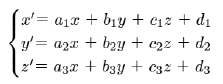
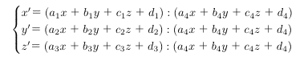
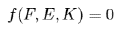
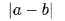
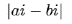
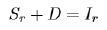
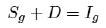
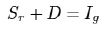

幾何学とは何であるか、之が私の問題である。云い換えれば、幾何学が或る一種の数学であることを承認し且つ一般に数学の真理が先験的であることを予想するとして、幾何学の――数学一般の、ではない――真理は如何にして成り立つか、というのが私の問題である。更に云い換えれば、幾何学は特殊の数学として如何なる特徴を有っているか、という問題である。
先ず何よりも始めに幾何学なるものの概観を得ることが必要と思われる。恐らく幾何学には無限の種類があるかも知れない。併し何れも幾何学なる名に於て統一されている以上それを一貫する何ものかがあってそれがその区別を与えているのでなければならぬ。吾々は之を攫むことによって幾何学を分類することが出来る筈である。クラインによれば凡ての幾何学は夫々或る一定の形を持った変換に対して不変に残されるものの不変量理論（Invariantentheorie）と考えられるが、クラインは之を解析的に云い表わすことによって幾何学の分類を与えようとした。
例えば類同幾何学は

なる類同変換に関する不変量理論であり、又射影幾何学は

なる射影的変換に関する夫である。これらの変換は夫々一つの変換群をなすのであるから一般的に云う時各々の変換群に対して一つずつの幾何学が成り立つわけである。即ち解析に訴えることによって更に又群の概念を借りることによって吾々は一切の幾何学を残りなく分類することが出来る（F. Klein, Elementarmathematik von h heren Standpunkt aus 2. Kap.
heren Standpunkt aus 2. Kap.  ）。併しながら第一に解析とは何か。今の場合この概念は無条件に導き入られてあるのであるが私は之を吟味しなければならない。普通数学の対象に数が導き入れられる時かかる数学を解析と呼ぶとも考えられるが、数は例えば有理整数論などに於てのように算法（Operation）を有つものの単なる符号と見做されることもある。併しもとより吾々は符号の算法を解析的とは云わない。即ち数が diskret と考えられる限り之によっては解析は生じて来ない。解析的とはそれ故数の連続が導き入れられる時の方法であると考えなければならない。処が数の連続が導入されるということは幾何学に於ては座標が与えられることに外ならない。向に挙げた変換式のｘｙｚ等とは実は座標軸を意味していたのである。勿論このような表現式は実際の座標を必要とはしないものであって単に「形式的」な現わし方に過ぎないとも云い得るが、もし凡ゆる意味に於て座標と関係のないものならばこのような表現式は全く理解し得ない無意味な関数関係に終って了う筈である。それが無意味でないためにはそこに座標が予想されていなければならない。解析的とは幾何学に於ては座標的ということである。空間と数とが直接に対応することである。さて凡そ分類の原理は偶然的であってはならぬ。分類されるべきものの本質に根ざした原理によってのみ分類なるものも許される。然らば座標は幾何学に本質的であるか、数は幾何学に欠くことの出来ない内容であるか。今座標を用いない幾何学乃至数の概念を含まない幾何学の存在を指摘することが出来れば之に対する答は明白である。曰く射影幾何学。それ故解析的方法によっては幾何学を本質的に分類することは出来ない。第二に向の解析的方法は群を通じて行なわれたが、群の概念を借りて試みられた分類と考えても決してそれは本質的ではない。何となれば後に明らかとなるように幾何学は群を以て尽すことの出来ない内容を有つからである。且又射影群に無窮遠要素を付加して類同群を得更に又球円を付加して主群（Hauptgruppe）を得、このようにして種々なる幾何学が分類されるのであるが、このような偶然な要素が偶然に付加（adjunktieren）されることはこの分類が到底必然的でないことを示しているものに外ならない。更に又群による分類法は例えば射影幾何学から出発して一切の幾何学をその Modifikation として導き出す方法に外ならないが、一切の幾何学が射影幾何学であるならばそこには何の分類も与えられはしない。一切の幾何学が或る一つの幾何学に帰するということは幾何学の分類とは問題が別である。射影幾何学に於けるこの関係は反径幾何学（Geometrie der reziproken Radien）に就いても全く同様に指摘されると思う（F. Klein, Vergleichende Betrachtungen
）。併しながら第一に解析とは何か。今の場合この概念は無条件に導き入られてあるのであるが私は之を吟味しなければならない。普通数学の対象に数が導き入れられる時かかる数学を解析と呼ぶとも考えられるが、数は例えば有理整数論などに於てのように算法（Operation）を有つものの単なる符号と見做されることもある。併しもとより吾々は符号の算法を解析的とは云わない。即ち数が diskret と考えられる限り之によっては解析は生じて来ない。解析的とはそれ故数の連続が導き入れられる時の方法であると考えなければならない。処が数の連続が導入されるということは幾何学に於ては座標が与えられることに外ならない。向に挙げた変換式のｘｙｚ等とは実は座標軸を意味していたのである。勿論このような表現式は実際の座標を必要とはしないものであって単に「形式的」な現わし方に過ぎないとも云い得るが、もし凡ゆる意味に於て座標と関係のないものならばこのような表現式は全く理解し得ない無意味な関数関係に終って了う筈である。それが無意味でないためにはそこに座標が予想されていなければならない。解析的とは幾何学に於ては座標的ということである。空間と数とが直接に対応することである。さて凡そ分類の原理は偶然的であってはならぬ。分類されるべきものの本質に根ざした原理によってのみ分類なるものも許される。然らば座標は幾何学に本質的であるか、数は幾何学に欠くことの出来ない内容であるか。今座標を用いない幾何学乃至数の概念を含まない幾何学の存在を指摘することが出来れば之に対する答は明白である。曰く射影幾何学。それ故解析的方法によっては幾何学を本質的に分類することは出来ない。第二に向の解析的方法は群を通じて行なわれたが、群の概念を借りて試みられた分類と考えても決してそれは本質的ではない。何となれば後に明らかとなるように幾何学は群を以て尽すことの出来ない内容を有つからである。且又射影群に無窮遠要素を付加して類同群を得更に又球円を付加して主群（Hauptgruppe）を得、このようにして種々なる幾何学が分類されるのであるが、このような偶然な要素が偶然に付加（adjunktieren）されることはこの分類が到底必然的でないことを示しているものに外ならない。更に又群による分類法は例えば射影幾何学から出発して一切の幾何学をその Modifikation として導き出す方法に外ならないが、一切の幾何学が射影幾何学であるならばそこには何の分類も与えられはしない。一切の幾何学が或る一つの幾何学に帰するということは幾何学の分類とは問題が別である。射影幾何学に於けるこの関係は反径幾何学（Geometrie der reziproken Radien）に就いても全く同様に指摘されると思う（F. Klein, Vergleichende Betrachtungen  ber neuere geometrische Forschungen, §6, 7 参照）。こういう理由からしてクラインの試みた分類法はそのどの着眼点に於ても本質的であったと云われないであろう。併しこのことはこの分類方法が数学自身に於ても本質的ではないということを意味するのでは決してない。数学者は幾何学を論じるに当って幾何学以外の数学の眼を以て之を見る着想の自由が与えられていなければならぬ。ただ私の問題は幾何学が他の数学から区別される処の特徴を見出すことそのことであるのを忘れてはならない。それ故このような麗しい分類法も数学のテクニックに属するのであって、吾々がそれから直接には得る処が少いということは当然であると云わねばならぬ。
ber neuere geometrische Forschungen, §6, 7 参照）。こういう理由からしてクラインの試みた分類法はそのどの着眼点に於ても本質的であったと云われないであろう。併しこのことはこの分類方法が数学自身に於ても本質的ではないということを意味するのでは決してない。数学者は幾何学を論じるに当って幾何学以外の数学の眼を以て之を見る着想の自由が与えられていなければならぬ。ただ私の問題は幾何学が他の数学から区別される処の特徴を見出すことそのことであるのを忘れてはならない。それ故このような麗しい分類法も数学のテクニックに属するのであって、吾々がそれから直接には得る処が少いということは当然であると云わねばならぬ。解析的に対するものは総合的である。今総合判断一般と数学的総合判断との区別は後者の基に公理が潜んでいるという点にある。幾何学を総合的に取り扱って分類するにはそれ故各々の幾何学の基礎に如何なる公理が横たわっているかを見定めることが最も正当な道であると云わなければならない。ヒルベルトはその『幾何学の基礎』に於て、結合、順序、合同、平行及び連続の五つの公理群を区別した。私はまずこの公理群に依って幾何学の一応の分類を試みようと思う。連続の公理にはヒルベルトによればアルキメデス公理と完備の公理とが含まれ両者を合せれば所謂デーデキント公理を得る（S. 23）。この公理の上に立つ幾何学はリーマンに始まりクライン等によって発展された位置解析（Analysis situs, Topologie）に外ならないと普通云われている。線、面、立体等の結合（Connexus）及び切断（Conpure）の関係は凡ゆる一対一の連続的変換即ちあらゆる Verzerrung に対して不変に残されるべき性質をもつものである。かかる性質をその対象とするものが位置解析に外ならない。即ち図形に於て縁の数をμ、面を分割しない回線の数をρとすれば、μとρはこのような変形に関らず自らを不変に維持する。今 ２ρ＋μ をこの面の結合度と定義すれば、あらゆる空間形象はこの結合度を標準として順序づけられる筈である。今もし形象の面の数をＦ、頂点の数をＥ、稜の数をＫとすれば、位置解析の定理はなる関係として云い表わされるものでなければならぬ。然るにこの形の定理は普通吾々が表象する裏表を有つ面に就いてのみ妥当し、例えばメービウスの多面体のような図形に於ては行なわれないことを注意したい。即ち或る図形に就いて他の幾何学的見地からして決して問題とはなり得ない処の区別、一側面と二側面との区別が茲では重大な問題となって現われるのを見る。以上の性質は位置解析が他のあらゆる初等幾何学にも先だち且つ何かの意味に於て――その意味は後に明らかとなる――特別の位置を占める幾何学である、ということを暗示するものと云ってよいであろう（Klein, Elementarmathematik v. h. S-P. aus S. 237 ff.; Riemann, Die inaugurale Dissertation zu G
ttingen, etc.）。次に結合の公理と順序の公理の上に立つものは射影幾何学である。普通之に連続の公理が加えられるのであるがヴェブレン・ヤングなどが rational space を考えたような意味に於て連続を解するならばこの公理は不必要となる（Veblen-Young, Projective Geometry,  . p. 99 ff.）。併し茲には後に触れるであろう問題が含まれていることだけを注意しよう。さて点、直線、平面等の要素に於て、低次の二つの要素が一つの高次の要素を決定すること、例えば二点が一直線を決定すること、を射影と名づけ、高次の二つの要素が一つの低次の要素を決定すること、例えば二平面が一直線に於て交わること、を截断と名づけるならば、射影幾何学とはかかる射影並びに截断に対して不変に残される要素間の関係をその内容とするものである。次に射影幾何学のこの二つの公理群に次の三つの公理群を加える時、吾々が普通計量幾何学と呼び慣している処のものを得る。即ち合同の公理、平行線公理及び連続の公理がそれである。処が平行線公理、即ち同一平面内に於て一点を過って任意の直線と交わらない直線は必ず唯一つある、ということを意味するユークリッドの公理は、之と矛盾する他の公理によって置き換えられることも可能である。この時ユークリッド幾何学に対して非ユークリッド幾何学を得る。向のような条件を充す平行線が全く許されない時リーマン・ヘルムホルツの幾何学を、又かかる平行線が無限に存在しその一双が特に平行線と名づけられる時ロバチェーフスキー・ボーヤイの幾何学を得るのは何人も知る処であろう。抛物線的、球面的及び楕円的並びに双曲線的幾何学として普通区別される処のものである（Sommerville, Non-euclidean Geometrie, p. 89, etc.）。さてヒルベルトの云うように如何なる公理群も他の公理群とは独立であるとすれば、吾々は任意の組み合せによって生じる公理体系の数だけの幾何学を区別しなければならない筈である。併しながらそのようにして得る分類は縦え論理的には正当であるにしても、その故に直ちに幾何学に対して本質的であるのではない。私はそれ故本質的な分類へ達するのに便宜な手段として特に以上の分類を選定しなければならなかったのである。
. p. 99 ff.）。併し茲には後に触れるであろう問題が含まれていることだけを注意しよう。さて点、直線、平面等の要素に於て、低次の二つの要素が一つの高次の要素を決定すること、例えば二点が一直線を決定すること、を射影と名づけ、高次の二つの要素が一つの低次の要素を決定すること、例えば二平面が一直線に於て交わること、を截断と名づけるならば、射影幾何学とはかかる射影並びに截断に対して不変に残される要素間の関係をその内容とするものである。次に射影幾何学のこの二つの公理群に次の三つの公理群を加える時、吾々が普通計量幾何学と呼び慣している処のものを得る。即ち合同の公理、平行線公理及び連続の公理がそれである。処が平行線公理、即ち同一平面内に於て一点を過って任意の直線と交わらない直線は必ず唯一つある、ということを意味するユークリッドの公理は、之と矛盾する他の公理によって置き換えられることも可能である。この時ユークリッド幾何学に対して非ユークリッド幾何学を得る。向のような条件を充す平行線が全く許されない時リーマン・ヘルムホルツの幾何学を、又かかる平行線が無限に存在しその一双が特に平行線と名づけられる時ロバチェーフスキー・ボーヤイの幾何学を得るのは何人も知る処であろう。抛物線的、球面的及び楕円的並びに双曲線的幾何学として普通区別される処のものである（Sommerville, Non-euclidean Geometrie, p. 89, etc.）。さてヒルベルトの云うように如何なる公理群も他の公理群とは独立であるとすれば、吾々は任意の組み合せによって生じる公理体系の数だけの幾何学を区別しなければならない筈である。併しながらそのようにして得る分類は縦え論理的には正当であるにしても、その故に直ちに幾何学に対して本質的であるのではない。私はそれ故本質的な分類へ達するのに便宜な手段として特に以上の分類を選定しなければならなかったのである。射影幾何学から計量幾何学へ移るに当って加えられた公理群は合同、連続及び平行線のそれであったが、第一に線又は角が合同であるとは何を意味するか。例えば二つの線が等しいという時吾々は両者を重ね合わせて見る外にこれを確める根拠を有たぬ。然るに重ね合わせるとは一を他へまで重ね合わせる運動を含まぬわけにはいかない。素よりヘルムホルツに従ってこの運動を経験界に於ける物体の運動と同じに見ることには多くの危険が伴うであろう。数学の要求は寧ろこのような運動の概念を除外して例えばシュタイナーの構成法の如きものを用いて純幾何学的に同等を定義することに努めるであろう。それ故運動とはこのような意味に於ける観念的運動と考えられるのが正しい（Weber-Wellstein, Enzyklop
 die,
die,  . S. 20, etc.）。かかる運動によって二つの要素が等しいと認められるためには運ばれたる要素がその運動の間に於て量的に不変であったことを予想することが必要である。即ち一般に要素は自らに同じである――等しいと区別せよ――ということが予め承認されてなければならぬ。ヘルムホルツが幾何学は剛体の自由運動を許すというが、この剛体を純幾何学的に定義する時、この様な自らに同じい要素を考えねばならぬと思う（Helmholtz, Ueber die Tatsache, welche der Geometrie zugrunde liegen. 参照）。併し自らに同じい要素というが何によって吾々はそれが不変であることを知るか。それには或る一定の単位が与えられて之を用いて計量した結果が不変であることを必要とする。それ故自らに同じい要素とはそれ自身計量の単位を意味するに外ならない。従って線や角の合同とは単位による計量を意味する外はない。合同の公理は計量を云い表わす。又アルキメデス公理はこの場合このような単位によって或る与えられたる要素の量を計量することそのことを意味する。然らば一歩進めて連続の公理はどうであるか。併し計量とは何であるか。単位を以て数えられる度数を意味するとも考えられるが、単位を以て数えられるためには数えられる要素自身が予め数量的でなければならぬ。若し数量的でないならば単位を以て数えることは無意味である。それは単に数えることであって計量ではない。それ故計量とは計量される要素と数との対応而も直接の対応を予想するのでなくてはならぬ。然るに数と要素との直接の対応というべきものは数の連続に於て始めて許される。数と空間、数と時間などが直接に――一対一の関係で――対応するのはただその連続に於てのみであることを何人も知っている。であるからして合同の公理は数連続体の導入を意味することとなる。連続の公理はあたかも之を云い表わすものである。私は以上合同の公理と連続の公理とが立つ根本的な予想即ち、計量――数連続体をば摘出した。平行線公理は之と如何に関係するのかの問題が残っている。線の場合とは異り角の計量の場合には直角という絶対的単位が必ず存在する。この絶対的単位によって計量された対象の metrical property ――それは他の相対的な単位による metrical property とは性質が異るが――を決定するものが平行線公理に外ならない。平行線公理は一見計量とは無関係であるかのように見えるのであるが、それへ計量に基く公理――例えばアルキメデス公理――を付加することによってそれが計量関係を支配する――例えば三角形の内角の和は二直角であるか否か――、という意味に於て計量と関係を持たずにはいられない公理である。結合や順序の公理に於ては全く場合が異るのを思い起こせばこの意味は明らかとなるであろう。平行線公理がこの意味に於ては計量的である所以は更に平行線公理と空間曲率との関係に於ても現われる。平行線公理に曲率という計量的概念を付与すると否とは自由であるが、一旦この概念を付与した以上、平行線公理は曲率の値をある意味に於て決定しなければならぬものである。一言にして云えば平行線公理は直角とか曲率とかいう角又は線の計量の絶対的な単位に関係するものである。さて射影幾何学と計量幾何学とを区別せしめたかの三つの公理群は何れも計量を云い表わす公理に外ならないことが明らかとなった。それ故私は一歩を進めて幾何学をば、公理に従って分類するよりも寧ろ公理に含まれる根本的な予想に従って分類することに思い至らなければならない。計量を含む幾何学――所謂計量幾何学即ち座標幾何学は少くともその一部分である――を一般に量的幾何学と名づけ、之に反して計量を含まぬ幾何学を一般に質的幾何学と名づける。かくて私は始めて本質的な分類を得ると思う。何となれば幾何学が質的であるか量的であるかはそれが本質的であるか本質的でないかの問題となることをやがて吾々は知るであろうから。
. S. 20, etc.）。かかる運動によって二つの要素が等しいと認められるためには運ばれたる要素がその運動の間に於て量的に不変であったことを予想することが必要である。即ち一般に要素は自らに同じである――等しいと区別せよ――ということが予め承認されてなければならぬ。ヘルムホルツが幾何学は剛体の自由運動を許すというが、この剛体を純幾何学的に定義する時、この様な自らに同じい要素を考えねばならぬと思う（Helmholtz, Ueber die Tatsache, welche der Geometrie zugrunde liegen. 参照）。併し自らに同じい要素というが何によって吾々はそれが不変であることを知るか。それには或る一定の単位が与えられて之を用いて計量した結果が不変であることを必要とする。それ故自らに同じい要素とはそれ自身計量の単位を意味するに外ならない。従って線や角の合同とは単位による計量を意味する外はない。合同の公理は計量を云い表わす。又アルキメデス公理はこの場合このような単位によって或る与えられたる要素の量を計量することそのことを意味する。然らば一歩進めて連続の公理はどうであるか。併し計量とは何であるか。単位を以て数えられる度数を意味するとも考えられるが、単位を以て数えられるためには数えられる要素自身が予め数量的でなければならぬ。若し数量的でないならば単位を以て数えることは無意味である。それは単に数えることであって計量ではない。それ故計量とは計量される要素と数との対応而も直接の対応を予想するのでなくてはならぬ。然るに数と要素との直接の対応というべきものは数の連続に於て始めて許される。数と空間、数と時間などが直接に――一対一の関係で――対応するのはただその連続に於てのみであることを何人も知っている。であるからして合同の公理は数連続体の導入を意味することとなる。連続の公理はあたかも之を云い表わすものである。私は以上合同の公理と連続の公理とが立つ根本的な予想即ち、計量――数連続体をば摘出した。平行線公理は之と如何に関係するのかの問題が残っている。線の場合とは異り角の計量の場合には直角という絶対的単位が必ず存在する。この絶対的単位によって計量された対象の metrical property ――それは他の相対的な単位による metrical property とは性質が異るが――を決定するものが平行線公理に外ならない。平行線公理は一見計量とは無関係であるかのように見えるのであるが、それへ計量に基く公理――例えばアルキメデス公理――を付加することによってそれが計量関係を支配する――例えば三角形の内角の和は二直角であるか否か――、という意味に於て計量と関係を持たずにはいられない公理である。結合や順序の公理に於ては全く場合が異るのを思い起こせばこの意味は明らかとなるであろう。平行線公理がこの意味に於ては計量的である所以は更に平行線公理と空間曲率との関係に於ても現われる。平行線公理に曲率という計量的概念を付与すると否とは自由であるが、一旦この概念を付与した以上、平行線公理は曲率の値をある意味に於て決定しなければならぬものである。一言にして云えば平行線公理は直角とか曲率とかいう角又は線の計量の絶対的な単位に関係するものである。さて射影幾何学と計量幾何学とを区別せしめたかの三つの公理群は何れも計量を云い表わす公理に外ならないことが明らかとなった。それ故私は一歩を進めて幾何学をば、公理に従って分類するよりも寧ろ公理に含まれる根本的な予想に従って分類することに思い至らなければならない。計量を含む幾何学――所謂計量幾何学即ち座標幾何学は少くともその一部分である――を一般に量的幾何学と名づけ、之に反して計量を含まぬ幾何学を一般に質的幾何学と名づける。かくて私は始めて本質的な分類を得ると思う。何となれば幾何学が質的であるか量的であるかはそれが本質的であるか本質的でないかの問題となることをやがて吾々は知るであろうから。幾何学の分類に就いてまだ一つの重大な問題が残されている。私は之に到達することを試みよう。まず注意すべきはライプニツがその「位置解析」という項に於て、代数は合同を即ち量を、之に反して位置解析は類同を即ち形を、従って又質を論じる数学であると述べ、「このような考え方は新しい計算法を示すものである」と云っていることである。それはライプニツによれば「代数的計算とは全く別のものであり、又その記号に於てもその応用とその算法に於ても全く新しいものである。」彼は之を位置の解析と名づけた。「何となればそれは直接に位置を云い表わし、而も形を実際に画くことなくして記号を用いて精神上之を写し、感性的な直観がただ経験的に知る処のものをば正確な計算と証明法とによって符号を用いて導き出すものなのであるから」（Hauptschriften Leibnizeus, I. S. 76）。ライプニツのこの理念が数学的に発展される時どういう形を取るべきであるかはこの場合まだ明らかではないが、少くとも茲に代数的或いは量的という意味が座標的ということであるのは疑う余地もない。それ故ライプニツがこの解析を以てデカルトの幾何学に代えることを要求した処から見ても彼の位置解析なるものと吾々の所謂位置解析（前を見よ）とは全く別のものでなければならぬ。次に又彼が質的と呼ぶ所以は私が向に定義したように計量を含まないということとは全く別であることもその「正確な計算」という言葉が充分に説明している。それは計量を含んでいる。量的幾何学でなければならない。デカルト幾何学に対して質的と呼ばれるのはデカルトに於ては尽すことの出来なかった幾何学の哲学的意味を明らかにしようと欲したからに過ぎぬであろう。ライプニツのこの理念を発展させたものと認められているグラースマンの Ausdehnungslehre に於ては、その広延量乃至は要素量が位置と量値を持つのである（Grassmann, Geometrische Analyse.）。即ちこの場合の要素は質ではなくして明らかに量である。Ausdehnungslehre が縦え座標というような偶然なもの（Willk
rliches）を許さないにしてもなおそれは「解析の形式」を具えていなければならない（Grassmann, Ausdehnungslehre von 1844, S. 397）。更に又グラースマンの要素量がクラインの云うように（Elementarmathematik v. h. S-P. aus S. 339）類同幾何学の対象に外ならないとすれば、類同幾何学が質的であるかそれとも量的であるかを見てライプニツの位置解析の蔽われた性質を検出することが出来ると思う。処が類同幾何学に於ては距離、角、円と楕円との区別、等の概念はない。即ち合同の公理は成立しないようにも見える。従ってそれは一応質的と考えられそうである。併し例えば射影幾何学に於ては無窮遠点なる概念が除外され得るのに反して茲では要素の有限と無限とは常に区別されなければならない。又円錐曲線の中点、直径、平行、方向、等の概念も許される。それ故類同幾何学は量的であると云う外はない。ライプニツの位置解析も之に準じて観察してよいと思う。さて併し吾々は茲に至って計量幾何学とは異る処の量的幾何学が少くとも一つは存在するということを識った。今両者を区別するものは座標に依るか否かである。併し縦え座標を用いないにしても量的幾何学は解析的でないのではない。クラインの云ったように（前を見よ）解析的とは必ずしも座標的であることを意味しない。併し又すでにその場合明らかにしたように之が座標と無関係であるというのではない。であるから座標を含むか否かは解析に対して根本的な区別ではない。計量に対する根本的な区別とはならない。それ故又量的幾何学の――それは計量を含むものと定義されてある――根本的な区別とはならない。私は量的幾何学を更に分類する理由を発見しない。之に反して質的幾何学の定義は消極的に――計量を含まない幾何学として――与えられてある。之を検べて見なければならない。ケーリが凡ての幾何学は射影幾何学であると云ったが、射影幾何学が又計量幾何学を含むならばその限りに於て量的であると考えられないでもない。射影幾何学に於ても座標があるではないかというであろう。併しながら計量幾何学の座標と射影幾何学の座標――仮に射影的座標と呼ぶ――とは本質的に区別されなければならぬ。今数とは独立な二つの幾何学的構成によって一直線上に点の位置を決定することを夫々和及び積と定義すれば、任意の単位をとる時、この直線上の或る一点を除いた凡ての点は、この和及び積に関して一つの領域（field）をなすと考えられる。然るに他方に於て数体系も同じ領域を造る数から成り立ち得るから、数体系は又一つの領域と考えられる。それ故もし直線上の点の領域と数の領域とを一対一の関係―― isomorphie の関係――に置くならば、直線上のかの一点を除いた凡ての点を数に対応せしめて之を数と全く同様に論じることが出来る筈である。之を射影幾何学に於ては非等質的座標という。今若し除かれてあった特異点――無窮遠点――の特異性を取り去るためには各々の点に夫々一双の数を対応せしめるならば、直線上の凡ての点は例外なく数の一双と対応することが出来る。之を等質的座標という。さてこのような射影的座標はデカルトの座標と同じではない。何となれば後者に於ては数と要素とが幾何学的な乃至は他の如何なる数学に固有な手続きにも依ることなくして直接に対応する。数と直線との対応に於て吾々が先験的に許さねばならぬものはこのような直接さである。然るに前者に於ては対応は決してこのような意味に於て直接ではない。多くの数学者が注意するようにそれが一定の幾何学的な構成を通じて始めて持ち来されるのであるからその対応は間接であると云わなければならない。処が向に計量は後者の場合の如き直接の対応に外ならぬことが明らかとなっている。従って前者の対応は質的となる。射影的座標は質的である。射影幾何学が計量幾何学を含むとは唯だこの質的な座標を通じてのみであると思う。然るにポアンカレは射影幾何学が直線の概念に基く故に質的ではないという、「計量によらない限り、即ち尺度と呼ばれる道具を線の上に滑らせるのによらない限り、その線を直線と確定することは出来ない。尺度とはとりも直さず計量の道具なのである」（Derni
 re Pens
re Pens e, p. 58）。即ち直線は計量によって始めて曲線から区別されるからして量的であると主張する。併し明らかに射影幾何学は直線と曲線とを区別して特に直線をその基礎に置くのではない。茲に必要なものは直線ではなくして異なる線である。二点によって一義的に決定される要素之が線である。併し又吾々はこの線を特に曲線と考える理由を何処にも持っていない。それは或る意味で矢張り直線と考えられる理由はあるであろう。けれどもその故に量的であるのではない。このようにして射影幾何学が量的と考えられる根拠は何れも薄弱である。射影幾何学は質的である。それ故之は又純粋幾何学或いは総合幾何学の名を以て呼ばれているのである。
e, p. 58）。即ち直線は計量によって始めて曲線から区別されるからして量的であると主張する。併し明らかに射影幾何学は直線と曲線とを区別して特に直線をその基礎に置くのではない。茲に必要なものは直線ではなくして異なる線である。二点によって一義的に決定される要素之が線である。併し又吾々はこの線を特に曲線と考える理由を何処にも持っていない。それは或る意味で矢張り直線と考えられる理由はあるであろう。けれどもその故に量的であるのではない。このようにして射影幾何学が量的と考えられる根拠は何れも薄弱である。射影幾何学は質的である。それ故之は又純粋幾何学或いは総合幾何学の名を以て呼ばれているのである。向に明らかにしたように位置解析（Topologie）は連続の公理の上に立つ。然るに又其の後に連続の公理の導入が計量幾何学の成立する一つの条件であることも明らかとなっている。従って位置解析は量的であると考えられるかも知れない。併しながら私は連続の公理の導入が何故計量幾何学の成立となったかをもう一遍思い出して見る必要がある。即ち合同の公理が数体系の導入を意味し従って数連続体の導入を意味したが、この数連続体の導入を云い表わすものとして、そして唯だその限りに於て、連続の公理が見出されたのであった。それ故この場合の連続の公理とは数連続体に就いての公理に外ならない。幾何学的要素――それは数ではない――そのものの連続を云い表わす公理ではなかった。然るに位置解析が基く連続の公理は幾何学的要素そのものの連続を定立する処のものでなければならない。であるから位置解析は連続の公理に基く為めに却って質的幾何学であることが明らかとなる。ポアンカレの如きは之を唯一の質的幾何学と考えた（射影幾何学に於て連続の公理を許すか許さぬかはこの考察を利用して決定出来る――前を見よ）。それでは二つの質的幾何学、射影幾何学と位置解析、との間にはどういう区別があるか。まず位置解析は如何なる幾何学にも益して根源的であると考えられる（Poincar
, R. Carnap, O. Becker, etc. etc.）。然るに射影幾何学も亦根源的と考えられなければならない理由がある（田辺元博士、幾何学の論理的基礎、Russell, etc. etc.）。何れが根源的であるかを決定することは困難であると思う。私は別の見方からして両者の区別を見出したい。射影幾何学の公理は要素の関係を与えると同時に要素そのものを生産する。公理とは dfinition dguise である。二つの点が一つの線を決定するという公理は、点と線との関係を与えると同時に、点及び線の定義でもある、即ち点及び線を生産する力を持っている。即ち射影幾何学の凡ゆる要素は射影幾何学自身が構成したものであって他から与えられたものではない。例えば或る与えられた面に就いてその射影幾何学的性質を論じようとすることは不可能である。何となれば構成された要素でないものは射影幾何学の対象とはならないからである。処が位置解析に於ては定立されているのは要素の連続だけであってそれによっては種々なる要素――曲線とか立体とかいう――は生産されない。このような対象は何処からか与えられなければならない。之が与えられて始めて之に就いて新に諸々の公理―― Existentialaxiome, Zerlegungsaxiome 等（Dehn, Topologie; in Pascals Repertorium d. hheren Mathematik. 参照）――が提出される縁を得るわけである。それでは対象が与えられるとは何を意味するか。それが経験から来るか又は純粋直観から来るか或いは又何か他のものから来るかは問題の外として、与えられるとは公理によって生産される処の要素乃至対象に他の要素乃至対象が偶然付加されるということに外ならない。今位置解析に於て連続の公理によって生産される処の対象は空間の連続であると云うことが出来るであろう。それでは之に偶然付加されるものとは何か。それは空間内の任意の個体としての図形であると思う。位置解析に於ては対象として任意の個体としての図形が与えられているのである。結合（Konnexus）というような概念は一つの図形に於て、而も他とは独立な個体としての図形に就いてのみ許されるものである。射影幾何学は空間一般の関係を論じると云ってよいが、空間一般の関係と云っても図形を離れて之を攫むことは出来ない。併しこの図形は一般的な関係の一例として構成されるのであって、決して個体としての独立性を有っているのではない。一つの対象が二つに切り離されるということは射影幾何学に於ては無意味と云わねばならぬ。それ故与えられるとは個体が与えられるのである。位置解析はこのような意味での図形に関係し、之に反して射影幾何学は空間そのものに関係すると云うことが出来るであろうと思う。さて幾何学の対象が空間であることを仮定するとすれば、空間と空間内の図形との区別に基くこの区別、射影幾何学と位置解析との区別は、あらゆる幾何学的対象に就いて見出されるべき最も根本的な区別でなくてはならぬ。であるから位置解析的であるか否かが幾何学の分類の最も本質的な標準である。質的か量的かの問題はその後始めて起こる。もし或る幾何学が位置解析に属すとすればそれは質的であり、もしそれが位置解析に属さないとすれば、計量を含まぬ時は質的であり計量を含む時は量的となる。幾何学は略々このようにして分類出来るのではないかと考える。私は量的幾何学を借りて幾何学に於ける数の権利を検べて見たい。数の算法の体系ともいうべき代数が屡々幾何学の図形に応用され又図形が代数の問題の解決に補助手段を与えるということは誰しも知っている。代数と幾何学とはこのように密接に関係しているのであるが、少くとも図形が代数に応用される点は今の問題とは縁がない。反対に代数が図形に応用されるとは如何いう意味に於てであるか。例えば代数的方程式によって幾何学的図形に関する解決を求めるとき、吾々はその方程式の幾つかの根の内で恐らくその一部のものを意味あるものとして採用し他のものを意味のないものとして捨てるであろう。即ち代数的方程式はこの場合それ自身では与り知らない或る外的条件によって制限されていなければならぬ。それ故之は単なる応用に過ぎない。応用とは自らの原理以外の原理によって支配されることをいう。今一つの二元一次方程式を考えるのに、この解法は不定なのであるから、之を応用して図形の問題を解くことは出来ない。然るに同じ方程式も解析幾何学に於ては直線の方程式となる。即ち解析幾何学の方程式は一般にある図形を意味する。之は少くとも向の単なる応用と同じではない。併しそれにも関らず、図形を意味する方程式の一定の形、即ち変数と常数との一定の結合はその原理を矢張り代数的方程式以外に求める外はない。それ故之とても代数の一種の応用――前の定義に従って――と見なければならない。クルノーが詳しく指摘しているように解析幾何学は代数そのものによっては尽すことの出来ない或る特異なものを条件として含んでいる、ということをもはやこれ以上説明する余地はないと思う（Cournot, Correspondance entre la G
omtric et l'Algbre）。代数と解析幾何学との関係を成り立たせている問題は寧ろ座標の中に潜んでいる。座標は一般に数と空間との、云い換えれば数値と点との一対一の対応である。解析幾何学に於ては特に座標は一つの数値と一つの点との一対一の対応となる。今このような対応関係が如何にして可能となるかという問題には触れぬとしても、その事実上の根拠は少くとも、数の連続と点の連続とが一致するということにある。云い換えれば連続という要素関係―― Typus ――に於て数と空間とが同一となるという処にある。更に云い換えれば連続に於て数も空間も或る意味で完備する（vollstndig）という点にある。このように考えると数と空間とは少くとも連続という概念に於ては全く区別が出来ないと云わねばならぬ（私は空間という言葉を何の用意もなく用いて来ているが、之と幾何学との関係をまだ何処にも与えていないから、之はまだ意味の不定な言葉に止っているということを忘れてはならぬ）。然るに連続とは系列の有つ一つの型（Typus）に外ならない。それ故立ち入って云うならば数の系列と点の系列とが連続という型を共有するということである。この事実に基いて数の系列と点の系列とが対応する。これが座標の意味に外ならない。それでは解析幾何学の座標と――それは点系列の体系である――数の系列の体系とは同一であるのか。否。リーマンがかの有名な就職論文（Ueber die Hypothesen, ……）に於て解析幾何学の対象を一般に「ｎ次の多様」と考えたが、彼によればこの次元は Vernderlichkeit に外ならないから、一次元は変数の一系列に外ならない。それ故「ｎ次の多様」とは変数のｎ個の系列の総体そのものである。処がもし系列のこの総体が数そのものの要求する系列体系と同一であると仮定すれば恐らくそれは実数と虚数とのかの関係――複素数の概念――でなければならぬ。然るに複素数の概念を如何に拡張するにしても実数と虚数との間には等方性の関係は成り立たない。二点間の距離は横にするも縦にするも変りはないがととは等しくない。のみならずｎは任意の自然数であるが、数系列の体系が任意の次元に拡張され得るか否かに就いては多くの疑問が残されていると思う。それ故リーマンの「ｎ次の多様」と数系列の体系とは同一ではない。即ち解析幾何学の対象は数体系によっては尽すことの出来ない特異なものを含んでいることは否定出来ないこととなる。このことは幾何学の計量に於て発見される処の絶対的な単位の存在によって徹底的に証明されるであろう。ユークリッド幾何学と非ユークリッド幾何学とに於て三角形の内角の和は云うまでもなく同一ではない。併し同一でないためには角の計量の単位が共通でなければならない。かかる共通の単位はπであることを何人も知っている。然るにπを直径と円周との比――円周率――と定義するのであってはそのような計量関係は何れの幾何学に於ても同一であるとは云えない。事実ユークリッド幾何学の円周率と非ユークリッド幾何学の夫とは異っている。凡そπを角以外の計量関係の上に基ける以上それは決して共通とは云えなくなる。共通であるためには角そのものの上に基く必要がある。πとは平角である。然るに平角は直線の概念と共に絶対的であることを注意しなければならない。即ち角の計量に於て計量にとっては一つの偶然なものとして、云い換えれば計量はするが併し決して計量されない処の或るものとして平角が与えられるのである。勿論角そのものは計量される――数によって量られる――が計量の根拠となるものが再び角自身でなくてはならぬ。茲に角そのものと計量そのものとの、即ち角と数系列との、独立が云い現わされている。角を含む幾何学的対象は数体系から独立である。長さの単位の絶対に就いて最後に一言しよう。例えばリーマンの幾何学に於ては直線は有限である。それ故有限なる直線そのものが長さの計量の単位となることが出来る。之は一定の空間曲率によって代表される。素より空間曲率一般は純粋に解析的に定義されなければならぬであろう。併しそれが長さの絶対的単位となるためにはもはや空間曲率一般ではなくして、或る一定の値を持った夫であることを予想しなければ無意味になって了う。言い換えればこの絶対的単位とは数系列に於ける此又は彼の一定の数値を指定することである。然るにこのような絶対性、数系列にとっての偶然性は何を意味するか。それは空間曲率という数体系からは独立の要素が幾何学に於て欠くことの出来ないものであることを最も直截に物語っている。さて私は解析幾何学に於ける数の権利を決定した。それによれば数は解析幾何学の内容を尽すことは出来ない。已に解析幾何学に於てすら数の権利は否定的なのであるからして一般に幾何学なるものの内容が数に還元され得ないことは明白である。リーマンの「ｎ次の多様」や所謂 Lehre von ausgedehnten Mannigfaltigkeit（Klein を見よ）の内容が縦え幾何学的表象から全く自由であるとしても数以外のものから来る原理的な制約によって条件づけられてあることを見逃すことは出来ない。之が今の場合の結論である。又私はこの結論から更に次のように推論することも出来る、故に量的幾何学は幾何学に固有なものの本質をば必ずしも直接には示さない、従って質的幾何学を考察することの方がより便宜であり又より確実である、と。之によって何故に幾何学を解析的に分類することが非本質的であるかという劈頭の問題も自ら解決されるのである（一を見よ）。然るに茲に一つの疑問が残されている。数の権利とは云うが私の取り扱った処の数は、吾々が定義することなくして常識的に数と呼んでいるもの――それは何かの内容を含む処のものである――に外ならなかった。処が数学者の数概念は之と同じではない。在るということ以外には全く無内容な所謂要素（Elemente）に一定の公理を与えて定義された一つの要素体系、之が数である。このような要素体系としての数の権利はまだ決定されていないではないか、之が残された疑問である。それ故前の問題は拡張されてこう変形される、一般に任意の要素体系―― Menge, Ring, Gruppe, K
rper, etc. ――が幾何学に於て持つ権利を決定せよ、と。併しこの新しい形の問題も数に就いては前の考察をそのまま繰り返す結果となる。何となれば右のように定義された数――それは範疇的である――も実は吾々が常識的に持っている数概念と対象としては全く同一なのであるから。けれども新しい形のこの問題は他の方面に於て一つの新しい考察を要求する。というのは数体系を外にして幾何学と密接な関係を有つ要素体系は云うまでもなく群である。問題は群が幾何学に対して持つ権利を決定することに移る。群の幾何学的図形に対する応用として屡々図形の回転が論じられる。図形の回転が一つの不連続群をなすことは可能である。併しながらそれは応用と云うよりも寧ろ或る種の群の例であるに過ぎない。吾々の問題は群が幾何学そのものに対する応用にあるのである。普通幾何学は群論に還元されると云うのであるが、吾々は之をどれ程の意味に解してよいか。ヘルムホルツは「自由なる運動」という概念を用いて計量幾何学の基礎を築いたが、この運動とはリーによれば一つの連続群、即ち一種の変換群（Transformationsgruppe）と考えられるべきものである。リーマンが曲率に基いて与えた計量幾何学の分類はこのような変換群の相違を規準として行なわれる（Lie, Transformationsgruppe. 3）。更に一般的に云うならば凡ゆる幾何学は変換群なるものの種々な性質を規準として分類されねばならぬ（一を見よ）。さてこの変換群とは何か。群は一般に、一つの同一要素と逆要素を含み任意の要素の積が一つの要素となるような要素体系、と定義される。変換群はこのような一般的な群の特殊のもの――要素が変換である処のもの――と考えられるのは云うまでもない。今その要素Ａは変換「すること」そのことに外ならないが併し変換するためには予め変換されるものがなければならぬ筈である。何物かが変換されるのでなければならぬ。今もしこの「何物か」が他の一つの要素Ｂであるとすれば、ＡはＢに依存することとなって之は無意味に終って了う。それ故この「何物か」はＡ自身に就いて見出されなければならない。この意味に於ての変換される「何物か」が必要となる。処がこのことは一般的な群そのものにとっては不必要であると云わねばならぬ。即ち之は変換群に付加された特殊の内容に外ならない。この特殊の内容とは何か。今この特殊内容を一般的に決定する代りに一つの条件を入れて考えて見よう。即ち適当な――吾々が常識的に幾何学と呼んでいる処のものを成り立たせるような――変換群を撰ぶとき、それは Untergruppe として、最小の群即ち主群を含んでいる。私は主群によってこの特殊内容の一端を窺いたい。主群とは運動、相似変形及び Spiegelung、並びにこれ等の結合からなると考えられる変換群をいう。併しこの運動は運動するものがなければ意味がない。縦え図形を予想しないまでも少くとも位置というものだけは許さなければならぬ。他の二つに対しても同様に夫々絶対的な大きさ及び要素の順序を許す必要がある。そして許さなければならぬこの三つのものこそ主群が有っている所謂特殊内容に外ならない。更に主群に於てそれ自らに変換する要素――同一要素――を考える時、例えば運動に就いては位置の不変が丁度之に相当するであろう。併し位置の不変ということは無限に多く――此処にも彼処にも――あると云わねばならぬ。然るに群の同一要素は定義によれば唯一つの筈である。処が矛盾とも見えるこの結果は却って変換そのものと変換されるものとの区別を明らかにするものに外ならないと思う。之が特殊内容である。それ故変換群は少くともこのような意味での特殊内容を含む可能性を有っていると云わなければならぬ。変換群が幾何学の根本的概念となるとすれば、茲に群そのものの外から之に付加された偶然な内容が潜入しているのを見逃すことは出来ない。であるから幾何学が群論に還元されるということは少くともそれが群論の総論に還元されることではない。事実幾何学はクラインの云うように変換群に就いての不変量理論（Invariantentheorie）なのである。即ち変換論とも云うべきものなのである（上掲著書参照）。然るにこの不変量とは何か。変換によっては変換されないものがそれである。処が変換自身は変換によって変換される群の要素に過ぎない。それ故不変量は変換それ自身以外のものに求められねばならぬ。然るに変換それ自身以外のものとは前に決められてあるように変換される処のものに外ならない。不変量は変換される処のものの内に求めなければならぬ。即ち不変量とは変換される処のものの間に於ける不変な関係であるより外に道がない。それ故不変量は向に変換群に於て見出された「何物か」の内容の一部である。不変量とは変換される処のものと共に、変換群の所謂特殊内容を成り立たせるものと云わなければならぬ。再び主群を借りて之を説明すれば、運動という変換に於て、変換されるものは位置であった。今運動という変換によって変換されない不変的な関係を求めると一定の図形というものが之に相当するであろう。図形は運動（変換）によって位置（変換される処のもの）を変えるが図形（変換に於ける不変量）自身は変らない。運動なる変換群に於ける特殊内容、それは位置と図形の外ではない。さて特殊の内容を此の点まで規定することが出来た以上、幾何学の対象が群乃至群論に還元されるということは一つの見落すことの出来ない条件を加えた上で始めて許される、ということとなる。茲に群が幾何学に対して持つ権利の限界があると考える。之がこの場合の結論である。群が何故に幾何学の本質的な分類を与えることが出来ぬかと云う理由は又この内に含まれている。この結論と前段の数に関しての結論とは更に次の帰結へ導く、幾何学はそれ自身以外の要素体系の内に属することは出来ない、と。従って吾々は自ら、幾何学という要素体系が在るか無いか、在るとすればどのような特質を持った要素体系であるか、の問題へ逢着する。然るに射影幾何学が存在するということ自身が問題の前半を決定している。従ってただ、幾何学は要素体系としてどういう特徴を有つか、の問題だけが残るのである。幾何学の要素は普通点、線、面などと考えられる。ユークリッドによれば、点は部分のないもの、線は幅のない長さ、等と定義される。この定義は点や線を説明して吾々へそれを容易に表象出来るように教えるものである。之によれば幾何学の要素は経験乃至直観から由来することとなる。併しこのような経験的な乃至は直観的な内容を持つと考えられる要素は、幾何学を一つの要素体系と呼ぶ意味での要素ではない。何となれば数学に於ける要素とは丁度このような内容をば含まないものであった筈であるから。それ故今の場合点、線、面などの概念はそれ自身には無内容なものであることを一応承認しておく必要がある。要素は undefined term である。その上で之を概念的に――直観的にではなく――即ち純幾何学的に改めて定義しなければならない。この定義が即ち公理――法則ともいう――に外ならない。公理が経験乃至直観に由来するであろうとは恐らく多くの人々の信じる処である。権威ある数学者にも之は決して少くはない。公理は「自然物」の「観察に直接に基く」（Pasch, Vorlesungen
ber neueren Geometrie, S. 16-17）とも、自然物の観察からの抽象である（Schur, Grundlagen der Geometrie）とも考えられよう。私はこれの真偽を決定しようとは思わない。唯だ此の人々は何故にかくなくてはならぬかを証明することなくして単に常識的にかく主張するに過ぎない。この問題は幾何学自身にではなくして幾何学の Genesis ――それは幾何学の推論の内には少しも姿を現わさない――に属しているのであるから、勿論之は此の人々への批難とはならない。と同時に之は又此の人々に何の論拠を提出するものでもない。であるから此の人々は、幾何学の公理は経験乃至直観と何の関わる処もなく唯だ数学者の任意によって産まれるものである、という主張――公理主義――に対して戦う武器を有ってはいない。実際幾何学に於ては経験乃至直観の「事実」に表われない公理、又はそれと矛盾する公理を構成する自由がなくてはならぬ。併しそれであるからと云って公理が全く任意に構成されたものであるということには決してならない。例えば二点が一直線を決定すると云う時、それが何故二直線を決定してはならないのか。点、直線などと云う要素が全く未知の概念である以上之は論理的な矛盾を含む筈はない。それにも関らず後半の仮定が幾何学を構成するのに不適当――不便であるからか否かは知らない――であるとして斥けられるとすれば、このように選択を与える何かの標準がなければならない。とは云うもののそのような標準は公理の内からは少くとも直接には見出せない。処が幾何学はただ一つの公理からは、即ちそれからの直接推理によっては体系を構成することは出来ない。幾何学は公理体系に基く。それ故求められた標準は公理体系、云い換えれば公理と公理との関係に於て見出されるであろう。然るに公理と公理とは互に矛盾しないという条件の下で互に独立であるから、どの公理とどの公理とを選ぶかは又一つの任意とも考えられる。併しもし之が任意ではないということが証明されたとすれば、如何なる公理を如何に選ぶかの標準が一遍に発見されるわけである。私はこの証明を試みよう。まず形式的に三つの異った要素をＡ、Ｂ、Ｃとして適当な条件の下に、┌（一）二つのＡが一つのＢを、
（１）│（二）三つのＡが一つのＣを、
│（三）二つのＣが一つのＢを、
└（四）三つのＣが一つのＡを、決定するものとする。今ＡをＣによって、ＣをＡによって置き代える時には（１）は（三）（四）（一）（二）の順序となるだけであるから（１）そのものは不変である。処が（四）の代りに
（四′）二つのＣが一つのＡを決定する、を置き代え、（１′）即ち（一）（二）（三）（四′）に前の変換を行うと（１′）は
┌（三）二つのＣが一つのＢを、
（１″）│（二′）三つのＣが一つのＡを、
│（一）二つのＡが一つのＢを、
└（四″）二つのＡが一つのＣを、決定することとなり、（１″）の（二′）と（四″）は夫々（１′）の（四′）と（二）とに矛盾せねばならぬ。のみならず、仮設によってＢとＣとは異る筈であるのに、（一）と（四″）とからしてＢ≡Ｃでなければならなくなって、茲にも矛盾が生じて来る。即ちこの変換は（１′）を不変のまま残さぬと共に又変換の結果をも矛盾に陥れて了う。以上のことは次のことを云い表わしている、「要素ＡＢＣを含む公理体系がＡとＣとの交換によって不変であるためには」少くとも（１′）のような公理体系を選んではならない、且つ少くとも（１）を選べば充分である、と。云い換えれば括弧内の条件はＡＢＣの公理体系を選ぶ標準に外ならない。今Ａを点、Ｂを直線、Ｃを平面とすれば、括弧内の条件は点と平面との双関性（Dualit
t）となる。それ故双関性は幾何学の公理体系を選ぶ時に必要な標準――少くともその一例――であることが明らかになる。一般的に云えば幾何学者の任意も特定の公理を特定の仕方に於て選ぶ限りに於て許されるに過ぎない。この特定という関係が偶々――その根拠は後で与える――公理を経験乃至直観に由来するものと考えさえ又要素を経験的な乃至は直観的な内容あるものと思わせたのである。幾何学には単なる任意によっても尽されない処の固有なもの――幾何学的なるもの――がある。茲に任意とは論理的矛盾を含まぬこと、云い換えれば思惟の可能性を意味する。故に幾何学的なるものは思惟の可能性に対する或る種の制限を云い表わす。幾何学はそれ故思惟によっては尽すことの出来ない何物かを持っているという結論に私は到着することとなる。思惟は幾何学に於て思惟ならぬ或るものに逢着することが明らかとなった。思惟ならぬもの、之を私は一般に直観と定義する。幾何学の基礎には直観がなければならぬこととなる。然るに凡ゆる要素体系――数学の対象一般――には同じ意味で直観が潜んでいると想像出来る。もしそうでなくして直観はただ幾何学にだけ特有のものとすれば問題はない。今仮りに幾何学以外の要素体系の凡てか又はその一部分のものの基礎に直観が潜んでいるとする。そうすれば幾何学の基く直観は他の要素体系の基く直観とは少くとも異っていなくてはならない。何となれば幾何学は他の要素体系には決して属すことが出来ないということを私はすでに証明して置いたのであるから（思惟は常に同一の機能であると仮定して）。それ故何れにしても幾何学にはそれに固有な直観がなければならない。幾何学的直観、それが今までに取り出すことの出来た名称である。無論この名称に相当する概念内容が何であるかは積極的にはまだ何処にも示されてはいない。
私は問題の方向を変えて人々が一概に空間表象と云い慣わしているものの性質を検べて見たい。シュトゥンプフは空間表象に就いての考え方を次の四種類に区別した（C. Stumpf, Ueber den psychologischen Ursprung der Raumvorstellung）。一、空間表象は任意の単一な感覚内容（Sinnesqualit
ten）から生じるものであって、空間という特別な内容があるのではない、とするもの。二、空間表象という特別なものがあってそれが特殊な感覚――運動感覚など――の性質である、とするもの。三、空間表象という特別なものがあって而もそれが少くとも直接には感覚から生じるものではない、と考えるもの。四、空間表象という特別なものがあって而もそれは他の感覚内容――色などの――と相俟って或る不可分な内容の部分にすぎない、と考えるもの、の四種類である。私は今シュトゥンプフに従ってこの一つずつの例に就いて考えて見る必要がある。ヘルバルト――第一種類の一例――によれば吾々は眼又は指を動かすことによって一つの続起する表象の系列を得る。そして現在知覚されつつある表象が最も強くこれに先立てば先立つ程他の表象は弱い。今眼又は指を動かし返す時、記憶に残っている以上の系列が再び呼び起こされ而もその強さの順序は前の順序に相当するであろう。感覚内容のこのような続起がとりも直さず空間である、という（S. 31）。なる程空間表象が発生する条件は之によって云い表わされているかも知れぬ。併し条件が直ちに空間表象そのものとはならぬであろう。このような条件に従う処の条件そのものではないものがなければならぬ。この点から見てこの考え方は空間表象の発生そのものを説明することは出来ない。空間というものを予め想定した上で始めて許される考え方である。而もシュトゥンプフの批難するように例えば時間を取って来るにしてもヘルバルトの空間に就いての説明をそのまま繰り返すことが出来るであろう。即ちこの条件を充すものは空間だけではない。のみならずこの条件を充さないものでも尚空間表象と考えられるものを挙げることも出来る。空間の定義とすら見ることは出来ないと思う。ベーンは――第二種類の一例――運動感覚を用いて空間表象を説明した。時間表象に於ては運動感覚が触感と結び付いていないか或いは結び付いているにしてもその触感が不変である。然るに空間表象に於ては之に反して運動感覚に触感が必ず結び付いていて而も之が変化する。空間とはこの変化する触感が一定の順序を形造りそれが運動を逆にすれば逆となり運動を繰り返せば繰り返す、ということに外ならない、という（S. 44）。即ちベーンの考え方がヘルバルトの夫と異る点は運動感覚を用いたことと、時間と空間との区別を明らかにしたこととにある。併し運動感覚を導き入れて考えるにしてもヘルバルトに対して与えた批評は矢張りそのまま繰り返される筈である。又時間と空間との区別は与えられるにしても、例えば音の感覚の系列と空間との区別はこの考え方に依っては説明されない。それ故私はベーンに対してもヘルバルトに対すると全く同じい批評を繰り返すの外はない（S. 55）。第三種類の考え方の例としてはヴェーバーを採ることが出来る。空間感覚は彼によれば「一般感覚」でなければならぬ。ヘルバルトが任意の一つの感覚内容によって、又ベーンが運動感覚を基礎として、夫々空間の発生を説明しようと企てたのとは趣を異にして、空間とは特別の神経或いは感覚内容の特別の一群に基くものではなく、一般的に視神経と触神経とに於ける神経の固有な配置に由来するものである、と説く。感覚圏の説が之である（S. 77）。即ちヴェーバーによれば、先ず感覚内容が与えられてあるとして、この感覚内容がその内に含まれてはいなかった処の特殊の配置に分布され、この配置によって空間表象が生じるというのである。処でシュトゥンプフは次のように論じる。併しこの配置に「よって」とは何を意味するのか。配置そのものは解剖的な関係に過ぎない。之が心理的な空間表象であるというのではない。とすれば「よって」とはこの配置が原因となるという意味の外にはない。処が物理的な刺激は原因となって起こし得るものは空間ではなくして感覚内容の性質――赤いとか冷たいとかの――に過ぎない。それ故この配置が空間表象の原因となるには物理的な刺激が原因であるという意味でのように直接な原因であることは出来ない。即ち今の場合の原因は物理的な原因ではなくして心理的な仲介者を意味しなければならぬ。シュトゥンプフは之を「心理的刺激」と名づけた。然るにシュトゥンプフの証明しているようにこの心理的刺激という概念は結局許すことの出来ないものなのである（S. 93 ff.）。従ってヴェーバーの試みも依然空間表象の発生を説明することは出来ない。却ってそれは空間表象なるものを始めから想定した上で加えられた説明に過ぎぬと云わねばならぬ。さて私は四つの種類の考え方の内最初の三つのものの正当でないことをばシュトゥンプフと共に知ることが出来た。共通の欠点は何れも空間表象の発生を説明するに当って寧ろ却って空間表象を予想しているという循環にある。さて之は次のことを裏書きするものである、空間表象の発生は到底説明することが出来ない、云い換えれば空間表象は根源的でなくてはならない、ということ。シュトゥンプフは更に第三の種類の考え方の一例としてロッツェを批評する。シュトゥンプフの解釈に従ってロッツェの所謂局所徴験を一言しよう。例えば種々の色が空間上何処かに位置を占めるというようなことはどうして起こるか。解剖的に位置を異にした神経が刺激を受けるからであるとするのは云うまでもなく充分ではない（これはヴェーバーに対する批評を見れば明らかである）。ロッツェは異った位置――それは網膜の上の点によって代表される――には夫々その位置に固有な感覚乃至は神経過程が備わっているとする。之が局所徴験に外ならない。局所徴験が眼球の適当な運動や或いはその運動の感覚や乃至は運動しようとする努力などによって表わされるというが、何れにしても定位 Lokalisation を与える原因がこの局所徴験なのである。之がロッツェの思想である。さてシュトゥンプフの解釈によればこの定位がとりも直さず空間表象に外ならない。従って局所徴験は空間表象の「原因」であることになる。而も「原因」はヴェーバーの感覚圏の場合と同じ理由によって心理的刺激という困難な概念に帰着して了う。依ってロッツェの考え方も空間表象の発生を説明するには不適当である、というのである（S. 86 ff.）。之に対してロッツェ自身次のように云うて反駁している、「私の試みは感覚の定位ということに終始するのであって」「吾々が如何にして空間表象に来るかを示そうと企てたのでは決してない」と（S. 321-2, Mitteilung Lotze's）。之を見ると問題は空間内の定位と空間表象とが同一であるか否かにあることは明らかである。併し之を一般的に決定することは今の場合は必要がない。ただ次のことだけは確かである、即ちロッツェ自身が両者を区別した以上之を同一と考えることはロッツェに就いての解釈としては正しくない、と。事実ロッツェは『形而上学』に於て非空間的な心理要素から空間表象の一般的な性質―― Nebeneinander ――を導き出すことが不可能であるのを主張し（シュトゥンプフがロッツェに於て求めているものが正にそれの可能性である）、もし非空間的な雑多を空間として把握する能力を与えられてあるものと仮定すれば、第二の課題として定位の問題を解決することは可能である（Metaphysik, S. 232 ― Ph. Bibl.）と明言している。即ちロッツェの局所徴験は空間表象の発生の説明を目的とするものではなくして、ロッツェは却って根源的な空間表象を基礎としていることを之によって意識しているものである。ロッツェの本来の主張はシュトゥンプフの解釈とは正反対に空間の根源性――シュトゥンプフ自身の求めているもの――そのものにあるのである。シュトゥンプフは又カントの空間説に対しても彼特有の批評を与えている。空間の主観性、主観的ならぬ表象はないのであるから、空間の特別な主観性、之はカントに於て何処に現われるか。シュトゥンプフによれば一般に表象に就いて次の三つのものを区別することが出来る。即ち表象される内容、表象作用、並びに表象成立の条件。第二の表象作用とは精神の働き方というようなものを指す。例えば感覚内容をば精神が働いて空間に順序立てる場合にはこの働きが所謂作用に相当する。併し空間的順序そのものが空間であるのではない。空間とは空間的順序の根柢（Fundament）でなければならぬ。それ故縦え空間的順序が表象作用に依るからして主観的であると云っても、空間的順序そのものの根柢となる空間が主観的であるということは何処からも出て来ない。次に空間は空間表象成立の単なる条件でもない。空間自身が表象されるのでなければならぬ。吾々は空間を直観するのである。それ故条件が主観的であっても空間を主観的と考える理由はない。それでは最後に表象内容に於ける主観性はどうか。表象内容の主観性とは特にある状態を以て感覚し得るという特殊の能力に外ならない。之を空間表象に当て嵌めれば空間表象という状態を以て感覚し得る特殊の能力となる。併し明らかに之は他の主観性から区別された処の特別な主観性ではない。であるから空間表象が特別に主観的であるというのはこのような能力を発揮させる処の動機が、「刺激」が、心自身の中にあるということでなければならない。それ故カントも亦かの心理的刺激の困難に行き当る第三の考え方の一例に外ならなくなる（S. 25 ff.）、というのである。併し所謂特別な主観性をカントの空間説に於ては、第一に、特殊な能力の刺激の内在というようなものにのみ帰して了う必然性はない。あるとすればその必然性は恐らくシュトゥンプフ自身が与えたものではないのか。又第二に特別な主観性として空間の所謂観念性に思いを及ぼさないということは不思議でなければならぬ。認識の先験的制約としての空間の観念性、これこそ空間の「特別な」主観性ではないのか。そしてこれこそ空間の根源性に就いての最も有力な主張ではないのか。カントの思想は決して空間表象の発生の問題に関するのではなくしてこの根源性の問題――之をカントは権利の問題という名で呼んだ――を中心としているものと云わねばならぬ。さて私はシュトゥンプフがロッツェとカントとに加えた批評を検べて見た。シュトゥンプフは両者の真の主張、空間表象は根源的であるという主張を見逃している。併しながらこの誤解は決して偶然ではない。それは彼自身の説――第四の種類の考え方――に深く根差しているのであるから。私は更に彼自身の考え方を批判しようと思う。
空間表象の発生を明らかにすることはすでに述べたように到底不可能と云わねばならぬ。シュトゥンプフによれば空間表象は根源的でなければならない。即ち他の何物かから構成されることによって始めて成り立つものではない。而も彼によれば根源的であるとは感覚がそれ自身説明し得ない直接態であるという正にその意味での直接性を指すものである。空間表象は特有な感覚内容を持っている。それは「色の表象と同様に又同じ意味に於て根源的である」（S. 128）。空間表象は絶対的な感覚内容を持っている、その限り根源的である。処が空間表象の感覚内容は他の感覚内容と結び付いて始めて意識に表われる。先ず「全体的な内容」があってその部分として始めて許される。普通感覚内容が強度や持続と結び付いていると同じ意味に於て空間は他の感覚内容と結び付いている（例えば色と延長のように）。空間表象はこのような「部分的内容」でなければならぬ。併し部分的内容と云ってもその結び付きの相手と何処かで区別される処がなければ部分とさえ云えない。空間とは他の内容から抽象されたものである。けれども他の内容を捨象することではない。他の内容を顧慮しないにしても之を全く忘れて了うことではない。例えば視覚内容は色々に変化する、併し変化する仕方そのものを吾々は区別して知覚することが出来るであろう。之が部分的内容となる空間表象である。又感覚内容の一部分は変化するが他の一部分はその変化に際して変化しないと考えられる、それが空間表象である（S. 137, 138）。であるから全体的な内容はなる程部分的内容に分割されることは出来る、併しそれは「外見上」の分割に過ぎない（S. 139）。空間表象はこのような意味で或る全体的内容の部分的内容である。その根源性はこれに基いている、というのである。シュトゥンプフは空間表象――それは一つの感覚内容である――と他の感覚内容とが不可分であることを指摘するのに色と延長との関係を一例として提供する。色と延長とは各々独立に変化することが出来る。一定の拡りが赤ともなり青ともなると同時に、一定の赤が大きくもなり小さくもなる。併しながら色と拡りとが独立に存在し得るのではない。ある拡りを持った赤が、その拡りを次第に小さくして零とすれば、これと共に赤も突如として無色となる。即ち少くとも色の存在は形の存在に依存している、と（S. 139）。併し之に対して私は次のように論じることが出来る。例えば赤い円が次第に小さくなって零となれば赤も消えるというが、逆に赤い円の色が次第に褪せて無色となったとすれば如何なるか。なる程円という形も消えて了うかも知れない。併し形が消えても空間表象が消えたことにはならない。円はそのままでありながら赤い色が円周から次第に褪せて行く――即ち赤い円が次第に小さくなって行く――とも考えられるから、円が消えたと見えてもそれと同時に円の元のままであると考えることも出来る筈である。であるから縦え形が消えたというにしても空間表象が無くなったことにはならない。それ故円の赤い色が消えても円が或いは少くとも延長が消えるということはない。明らかに空間が存在しなければ色は存在しない。併しその逆は必ずしも真理ではない。一体色が存在するというが存在とは何か。それは明らかに空間的存在の外ではない。そうとすれば存在とはこの場合要するに空間のことである。であるから延長と色とが独立に存在し得ない、従って延長はその存在を色に負うている、という推論は無効である。さて以上のことは空間が色と――一般に又他の感覚内容と――同格の感覚内容ではないということを示している。その理由は正に次のことの内にある。即ち空間は延長と形との両面を持っている、形が消えても延長は消えない。然るに色はこのような両面は持たない。赤が消えても色一般は消えないというかも知れないが、吾々は色一般の感覚は持たない。赤と色一般とは同格の内容ではない――形と延長とは何れも表象し得るという点で同格である。表象された空間はシュトゥンプフ自身の云うように多数の印象ではなくして一つの統一でなければならぬ（S. 126）。即ち一つの形は直ちに空間全体への関係を含むことがその特色である。一つの形は全体へ「拡張され得る」ものでなければならぬ。空間は一つである。此処という位置の感覚は彼処という位置の感覚を呼び起こさぬ限り此処の感覚とはならない。然るに赤の感覚がこのような意味で青の感覚を呼び起こすのではない。このことも亦空間表象の両面性という事情に基いている。空間表象は他の感覚内容と同格ではない。であるから又所謂部分的内容という考えもそのまま承認出来なくなる。抑々視空間と例えば触空間との関係はどう考えられるか。シュトゥンプフによれば何れも根源的であって而も両者は一つの「体系」を造る（S. 278）。二つの空間のこの「統一」は根源的な知識（uranf
ngliche Erkenntnis）というの外はない（S. 288）。併し今視空間を視覚の部分的内容とし触空間を触覚の部分的内容とすれば、視覚と触覚とは明らかに別であるから、二つの部分的内容が一つとなることは保証されていない。それが根源的な知識であるためにはその統一は視覚にも触覚にも属さない或るものでなくてはならぬ。即ち二つの空間は部分的内容であるにしても又同時に全体的内容とは独立な統一を持っていなければならなくなる。従ってもはやシュトゥンプフの定義したような部分的内容ではなくなって了う。処がこのことは空間のみが有つ特色である。他の感覚内容は二つ以上の感官に共通であることはない、触覚はただ触官にのみ属している。即ち空間は他の感覚内容と同格な意味で部分的内容であるのではない、ことが明らかとなった。空間表象はこの意味に於て他の感覚内容とは独立でなければならぬ。処が今まで空間表象が根源的である所以はそれが感覚内容であったということに、即ち他の感覚内容と同格な内容であるというにある筈であった。然るに空間は同格ではなくして独立であることが示された。それ故シュトゥンプフの立場からすれば――空間表象は感覚的内容を持つという立場――空間の根源性は否定されなければならなくなる。向に述べたロッツェとカントに対するシュトゥンプフの批評は彼がロッツェ及びカントに於ける空間の根源性をこの理由からして否定している現象に外ならない。而も二人はシュトゥンプフの解釈とは正反対に空間の根源性を主張した。即ち彼をして誤解せしめた処のものは正に、空間表象が感覚的内容を持つという立場そのものである。であるから空間が根源的であるのを知るためには空間感覚及び空間知覚という概念を放擲しなければならない。このような概念に執着する限り如何なる心理学者も――シュトゥンプフすらも――空間の根源性を摘出することは出来ないであろう。空間感覚或いは空間知覚という概念に較べれば空間直観という言葉はより有効に用いられる。向に直観は思惟に対する制限として消極的に定義されたが――二を見よ――今の場合には仮に直観をば感覚を含む場合と之を含まない場合とに区別しなければならぬ。もし普通に直観は凡て感覚を含むものと定義されているならば之を感覚を含まないものにまで拡張しなければならぬ。感覚を含むものを経験的直観、感覚を含まないものを之に対して仮に純粋直観と名づけよう。然るに空間表象は前に述べたことによって感覚を含むべきものと考えてはならない。言葉を換えて云えば空間表象の内に感覚が位置を占めて現われるのは差閊えないが、空間表象自身が感覚に由来する――そうすれば空間感覚或いは空間知覚の概念を生じる――のであってはならない。故に空間表象は純粋直観である。併し無論逆に純粋直観が凡て空間表象であるのではない。例えば時間のようなものも純粋直観であるかも知れない。空間表象はどのような純粋直観であるか。意識が何であるか外的世界が何であるかは困難な問題であろうが、少くとも両者の間に何か一義的な区別のあることは誰でも認めなければならぬと思う。今この区別を内界と外界という言葉を以て云い表わせば空間表象が外界に関わることは明らかである。空間は外的な純粋直観でなければならぬ。Hinschauen（フィヒテの言葉）と云うことが出来る。先ず空間直観の概念を茲まで決定することが出来ると思う。ロッツェが空間表象を外的直観と呼んだのは之に相当すると解釈出来るであろう。処が彼は向に引用した文章の示す通り、この空間表象をば無条件に承認せねばならぬものと主張する。即ち空間は根源的な純粋直観でなければならぬ。吾々は空間表象に就いて語る時には先ず空間表象そのものを予想しなければならない。無論この予想を証明しようとすることは――ヘルバルトやベーンが試みて失敗したように――不可能である。併し予想を証明するということと、予想を予想として承認し而る後にその予想が何を意味するかを説明するということとは全く別である。であるから空間の根源性という予想を証明しようとすることが失敗に終ったにしてもその故にこの予想を何かの意味に於て説明するということまでが不可能に終る理由はない。吾々が或る何物かを予想する時少くとも吾々がその予想を採らねばならなかった所以を justify 出来るのでなければならぬ。単に空間を予想しなければならぬと云うばかりではなく更に何故に之を予想しなければならぬか、云い換えれば予想そのものがどういう意味を持っているか、を云い表わす仕方を発見することが必要である。空間表象の根源性を説明し得るもの――証明し得るのではない――はカントの観念論に外ならない。カントによれば空間は外観の形式、外的直観の形式である。という意味はカント学徒の云う通り空間が外界成立の規範であり範疇であるということである。併し範疇であると云ってもカント自身の云っている通り空間がカント自身の意味した範疇であるというのではない。空間は直観である。即ち思惟――悟性――ではない。然るに範疇は悟性概念に外ならない。それ故空間が範疇であるという意味は、空間は直観であることそのことによって範疇としての意味を有つということの外にはない。空間は直観であると同時に範疇である。同時に範疇である処の直観でなければならぬ。更に反覆すれば空間とは現実意識に現われる直観内容であり、且つそのことによって同時に外界成立の範疇となっているものでなければならぬ。之こそ空間表象に於て見逃すことの出来ない重大な特色である。空間表象の根源性は正にこの範疇の外にはない。外界成立の範疇であればこそ空間は証明することの出来ない予想――ロッツェの場合――ともなり、視空間触空間などが根源的に一つのものに統一されている――シュトゥンプフの場合――根拠ともなることが出来る。空間直観はこのような意味で根源的と考えられなければならない。であるからして空間の根源性を知るためには是非とも空間直観にまで到着する必要がある。今や私は空間表象が根源的であることに着眼することによって空間直観という概念を取り出すことが出来た。但しそれに就いてただ次のことだけが決められてある、即ち空間直観は第一に外的な純粋直観であり、第二にそれが直観である限りに於て外界成立の範疇である。
私は二つの結果を得た。幾何学的直観と空間直観と。両者はどう関係するか。そのためには直観という概念を根本的に規定しなければならない。向には直観を思惟に対する限界と定義したに過ぎなかったが、思惟が限界されるということには二つの場合があると思う。第一は思惟と直観とが互にフレムトなものと考えられた場合である。無論思惟と直観とは結び付くことは出来るがその場合でも直観内容は思惟に対する偶然として現われ思惟は自らの力によって予め之を決定することは出来ない。思惟が直観を基けるのでもなく直観が思惟を基けるのでもない。直観は直観であり思惟は思惟である。何かを思惟するという時思惟されるものが必ず直観内容であるならば思惟は直観に基くか又は之を基けることとなるから今の場合の思惟ではない。それ故思惟されるものが直観内容でなくてもなり立つ処の思惟だけが今の場合の思惟である。このように考えられた思惟と直観との区別に於ける直観を感性的直観と定義する。第二は之に反して思惟と直観とは必ず結び付いていなければならぬと考えられた場合である。云い換えれば思惟と直観とは或る一者の必然的な二面であると考えられる時である。直観内容を云い表わすには思惟を通じてでなければならぬ――即ち直観は思惟に基く――が、併し思惟は直観内容そのものを云い表わす以外のものではない――即ち思惟は直観に基く――という関係に於ける思惟と直観とである。この場合の特徴は両者が互に他のものによって代表されることが出来るということである。この意味に於て思惟と直観とが同一のものとして取り扱われても差閊えがないということである（第一の場合は明らかに之を許さない）。このようにして思惟と区別された直観を知的直観と定義しよう。さて直観の根本的な二義をこのように区別するとすれば幾何学的直観と空間直観との区別を明らかにすることが出来る。幾何学的直観は向に明らかにした通り――二を見よ――幾何学に於て思惟によっては尽すことの出来ないものの存在を意味する。即ちそれは幾何学の基礎でなければならぬ。即ちこの意味に於てそれは幾何学を基けている。且又幾何学的直観の内容を規定するには幾何学そのものによる外はない。即ちこの意味に於て幾何学は幾何学的直観を基けている。然るに幾何学が数学である以上は一種の思惟の体系である。従って幾何学的直観は思惟に基き又之を基ける。それ故幾何学的直観は定義に従って知的直観に属する。そのことは又、幾何学的直観は幾何学――思惟の体系の一つである――によって代表される、という結果をも伴う。次に空間直観はカントが説いているように――三を見よ――悟性ではない。思惟ではない。空間直観は悟性概念――即ち範疇――ではない処にその特色があった筈である。従ってそれは思惟に基くものでも思惟を基けるものでもない。思惟は思惟であり空間直観は空間直観である。故に空間直観は定義に従って感性的直観に属していなければならない。両者をかく区別した上で次にその関係を求めよう。一般的に感性的直観は思惟とは独立であるがそれは両者の結合が不可能であるということではない。併しカントも考えたように両者が結び付くためには第三者が必要である。予めこの第三者があってそれに基いて両者が結び付く理由が始めて在ると云わねばならぬ。併し予想された第三者の内容は両者の結合の結果としてしか現われることは出来ない。即ち感性的直観と思惟との結合の結果が予め予想されてあったものに相当しなければならない。云い換えれば両者が結合し得るという可能性は両者が本来結合していなければならぬものであるという必然性に基いている。処が後の場合の必然性は明らかに知的直観に外ならない。即ち知的直観（Ｉ）に於て感性的直観（Ｓ）と思惟（Ｄ）とが結び付くのである、と同時にＳとＤとの結合の結果がＩに外ならないのである。Ｓ＋Ｄ＝Ｉでなければならない。併し茲に注意しなければならないことはＳ＋ＤがＩに基くと云ってもＳそのものがＩに基くということにはならない（同様にＤそのものがＩに基くということにもならない）。唯だ＋ＤがＩに基くのである。それ故ＳとＩとの関係はＳがＩに基くのではなくしてＩがＳに基くのでなければならぬ。この意味に於てＳはＩに対して根源的であると云うことが出来る。Ｓ＋Ｄ＝ＩではあるがＩ−Ｄ＝Ｓと記すことは出来ない。これが知的直観と感性的直観との間の一般的な関係である。処が前に述べた処によって空間直観は一種の感性的直観（Ｓr［＃「Ｓr」は縦中横］）であり幾何学的直観は一種の知的直観（Ｉg［＃「Ｉg」は縦中横］）である。従って次の二つの関係を得る。及び。この場合＋Ｄは単に思惟の結合を形式的に云い表わしているのでそれが実際上如何いう具体的内容を取るかはまだ決められてない。又吾々はＩr［＃「Ｉr」は縦中横］及びＳg［＃「Ｓg」は縦中横］なるものの存在に就いては何も与えられてない。であるからもしｒ≡ｇでないならば二つの関係から吾々はＳr［＃「Ｓr」は縦中横］とＩg［＃「Ｉg」は縦中横］との間の一定した関係を何も導き出すことは出来ない。之に反してもしｒ≡ｇであるとすれば両式からという結果を得る。即ちｒ≡ｇならば幾何学的直観は空間直観に基くこととなる。それ故幾何学的直観と空間直観との関係を知る――それが私の課題である――ためにはｒ≡ｇであることを見出せば好いわけである。之を云い直せば幾何学的直観に於て感性的な基礎となるものが空間直観と同一であることを知ればよい。そして之を知るために最も手近かに見えるものは幾何学と空間直観とに共通な内容を発見しようとする試みであろう。例えば連続は両者に共通であり、空間の直線性（平面性、ユークリッド性）は又射影幾何学の線（即ち直線）や面（即ち平面）の概念に見出される。空間の直観が無限であるように例えば射影幾何学の対象は無限であり又無限遠点というような概念もこれに基く。であるから之は確かに一つの方法であるに違いない。併し如何に多数の例を挙げてｒ≡ｇであることを例証するにしても凡てを枚挙しない限りその推論は帰納的蓋然性以上の妥当を得ることは出来ない。仮に何処か一つ共通でないものが発見されたならばもはやｒ≡ｇの証明としては役立たなくなる。それ故ｒ≡ｇを証明することは一見容易に見えて実は不可能であると云わなければならぬ。であるから私は他の方法を用いる必要がある。今始めから記号的にｒ≡ｇと仮定しよう。という意味は記号的に
この方法を実際的に用いるに当って次の二三の考察をしておく必要がある。向に私は経験的直観と純粋直観とを区別し、空間直観は純粋直観に属することを述べた。今もし幾何学的直観が経験的直観であるならばｒ≡ｇという仮定は全く理由のないことである。何となればそれは明らかにｒ≡ｇではないという事実を云い表わしているから。併しながら幾何学的直観は経験的直観ではない。何となれば経験的直観とは定義によって感覚を含む直観に外ならないが、幾何学的直観は感覚を含むものではない。という理由は幾何学の要素は幾何学的に純粋に――感覚とは独立に――定義されるのであり、その定義がまた公理主義の主張するように経験の事実とは独立とも考えられる。縦え公理主義によって解くことの出来ない直観内容――幾何学的直観――があると云ってもそれが経験界に属するということにはならない。であるから幾何学は感覚とは独立である。然るに向に明らかとしたことによって幾何学は幾何学的直観によって代表される筈である。従って幾何学的直観は感覚を含まない。即ち経験的直観ではない。であるからｒ≡ｇと仮定するに差閊えはないこととなる。次に又単にこの仮定が差閊えないものであるばかりでなく大いに理由のあることを注意する必要がある。それは幾何学の対象界と空間直観との間に多くの共通な性質が発見されるということである。無論このことはこの仮定が真であることの証明としては不充分であろう（その理由は前に述べた）。併し少くともそれはこの仮定への動機となるだけの理由を有っていることも否めない。であるから要するに仮定ｒ≡ｇは非常に当然な出発点であると云わねばならぬ。次にＤ′＝Ｄであることを実際上見出す場合、その探究の範囲を予め出来るだけ決定しておく必要がある。それは云うまでもなく空間直観と幾何学との関係に於て見出すこと以外には無意味である。処が幾何学は一に於て明らかにしたことによって量的であるか質的であるかである。量的幾何学の特徴は計量を含むこと即ち数概念を導入することにあった。併し数とはすでに明らかとなっているように一種の思惟の体系に外ならない。従って量的幾何学はこの意味に於て必ず思惟の加工を含んでいるものと云わなければならない。然るに空間直観はこのような意味では思惟を含むものではない。空間の直観に数概念が発見されるということをば私はまだ何処にも云ってないし又それが可能でありそうな理由も吾々は有たない。であるから空間直観と量的幾何学との間には必ず思惟の機能が発見される筈である。それ故求められた解決は茲に見出されるかのように見える。併し二に於て明らかにした処に従えば量的幾何学は必ずしも幾何学の本質を明らかにするものではない。それ故この解決を幾何学全体へ及ぼすことは出来ない筈である。即ち量的幾何学との関係に於ては必要な解決を取り出すべき一般的な関係を引き出すことは困難である。であるから吾々は質的幾何学を利用する方が有効であることとなる。一によれば質的幾何学は射影幾何学と位置解析とに分れる。それは幾何学の本質の異った二面を代表するものであることはその場合明らかにされた。それ故思惟Ｄの機能を空間直観と射影幾何学並びに位置解析との関係に於て指摘することが出来たならば吾々の問題の解決に充分であるであろう。探究の範囲がかく決ったとして次に如何なる着眼点によって探究の歩を進めるかを予め定めたい。もし空間直観と幾何学的直観との間に思惟を
 む余地がないならば空間直観の内容はそのまま質的幾何学の内容となって現われなければならぬ筈である。即ち前者と後者との間には差異を見出すことが出来ない筈である。それ故両者の間に思惟の機能を検出するためには両者の間の差異に着眼しなければならない。質的幾何学と空間の直観とに同一ではない処の性質を探求の拠り処としなければならない。併し同一でないと云っても凡ゆる意味に於て共通でないならば縦えそれが或る思惟の機能を云い表わすにしても空間直観と質的幾何学との間に働くものであるか否かは全く不明である。それ故そのようなものを検出することが出来てもそれによっては幾何学が空間直観に基くことの証明に役立つ筈はない。であるから吾々は両者の間に於て共通でありながら尚且つ互に異っている処のものを用いる必要がある。さて空間の直観の性質として普通次のものが挙げられる。等質性、等方性、無限、直線性及び次元。然るに前の三者はそのまま質的幾何学の対象の性質となる。従って吾々の要求を充さない。直線性は又少くとも位置解析には現われない。稜というような概念は一般に曲線を意味する。即ちそれは共通ではない。従って之も不充分と云わねばならぬ。唯独り次元のみは両者に共通でなければならぬように見える。幾何学も次元を持っているであろう。のみならず空間は三次元と考えられるに反して幾何学の次元は数３に限定される理由は何処にもないであろう。次元は両者に共通でありながら且つ両者に於て異っていると想像出来る。即ち次元は吾々の要求を充す可能性があると想像してよい。であるから問題の鍵は次のことに潜んでいる。空間直観と射影幾何学並びに位置解析との関係に於て、次元に着眼することによって思惟の機能を検出すること、之である。
む余地がないならば空間直観の内容はそのまま質的幾何学の内容となって現われなければならぬ筈である。即ち前者と後者との間には差異を見出すことが出来ない筈である。それ故両者の間に思惟の機能を検出するためには両者の間の差異に着眼しなければならない。質的幾何学と空間の直観とに同一ではない処の性質を探求の拠り処としなければならない。併し同一でないと云っても凡ゆる意味に於て共通でないならば縦えそれが或る思惟の機能を云い表わすにしても空間直観と質的幾何学との間に働くものであるか否かは全く不明である。それ故そのようなものを検出することが出来てもそれによっては幾何学が空間直観に基くことの証明に役立つ筈はない。であるから吾々は両者の間に於て共通でありながら尚且つ互に異っている処のものを用いる必要がある。さて空間の直観の性質として普通次のものが挙げられる。等質性、等方性、無限、直線性及び次元。然るに前の三者はそのまま質的幾何学の対象の性質となる。従って吾々の要求を充さない。直線性は又少くとも位置解析には現われない。稜というような概念は一般に曲線を意味する。即ちそれは共通ではない。従って之も不充分と云わねばならぬ。唯独り次元のみは両者に共通でなければならぬように見える。幾何学も次元を持っているであろう。のみならず空間は三次元と考えられるに反して幾何学の次元は数３に限定される理由は何処にもないであろう。次元は両者に共通でありながら且つ両者に於て異っていると想像出来る。即ち次元は吾々の要求を充す可能性があると想像してよい。であるから問題の鍵は次のことに潜んでいる。空間直観と射影幾何学並びに位置解析との関係に於て、次元に着眼することによって思惟の機能を検出すること、之である。空間が三次元であるか否かは一応の問題である。空間を実在構成の論理的制約と考え、論理的制約そのものには次元を考える理由はないから空間は三次元に限られる理由もない、とも云われるかも知れない。併し三に於て明らかにしたように空間は単なる範疇ではない。それが直観であるが故にそしてただそれ故にのみ範疇となり得るのである。それ故縦え範疇一般とも云うべきものの性質を取って来て空間の性質を決定してもそれは空間なる範疇の性質が決められたこととはならない。空間は直観である。そして事実三次元でなければならぬ。直観が三次元であるとは無意味ではないか、直観は心理的作用に外ならないから之が一般に次元を持つということさえ不当ではないかと考えられるかも知れない。併し直観には直観する一面と直観される一面とが必ず結び付いていなければならない。もし空間の直観される処の一面がないならばそれは如何にして存在の範疇となることが出来るか。今直観される処の一面――それが空間と普通呼ばれているものである――は事実上三次元である。直観する一面もその限り三次元ではないにしても三次元的でなければならぬ。空間直観は三次元性を有つ。併し空間直観の三次元性とは何か。空間直観に於ては点、線、面と云う内容を区別出来る。併し少くとも立体はこれと性質を異にしていなければならぬ。今有限な平面と有限な立体とを想像しよう。両者は共に空間全体の部分である。然るに両者を無限ならしめれば立体は空間全体となるに反して平面は矢張り全体の部分に止る。即ち空間直観に於ては要素は点、線、面以上に出ることは出来ないことが之によって証明されている。空間直観はこのような拡張することの出来ない全体である。之が即ち空間直観の三次元性に外ならない。三次元とは空間直観に於てはこの点―線―面の全体的な体系そのものに外ならない。それでは次に幾何学の次元とは何か。二に於て述べてあるようにそれは例えば数体系の次元とは異る。幾何学的なるものの次元でなければならぬ。次にまたそれは例えば色の体系の次元とも異る。ロッツェも云っているように色の次元とは要するに一つの比喩であるに過ぎない。Farbengeometrie 或いは Tongeometrie と云われるものは勿論幾何学ではないのである。即ち幾何学の次元は幾何学に固有でなければならぬ。ｎ次の多様ということは「ｎ次に延長せる多様」ということである。然るに空間直観の次元とは正にこの延長そのものである。何となれば之によってのみ空間直観は他の直観から区別されて「存在」の範疇となることが出来るのであるから。それ故空間直観の次元が意味するものと幾何学の夫が意味するものとは同一でなければならぬ。次元は両者に共通である。ただ両者の差異は前者に於てはそれが三次元であり後者に於ては一般にｎ次元であるということである。さて併し次元そのものは数３に限定される理由はない。即ち３はｎにまで次元の性質上拡張されなければならない。処が空間直観の三次元性はその点―線―面の全体的な体系に外ならぬ。それ故空間直観の三次元を幾何学的空間のｎ次元に拡張するためには空間直観の点―線―面の全体的な体系と次元そのものとを分離しなければならぬ。即ち全体的な体系が次元に加えている制限を取り去らなければならぬ。次元はかくすることによって始めて独立となり任意の次元が可能となる。之を云い換えればｎ次元に拡張するためには点―線―面の体系の全体性（Ganzheit）を否定しなければならない。然るに点―線―面体系の全体性は空間直観の性質に外ならない。従って之を否定するということは空間直観をば之に代るべき他のものによって置き換えることである。三次元がｎ次元に拡張されるために置き換えられるこのもの、それは明らかに幾何学である。処が置き換えられるものは点―線―面体系の全体性を否定するものである。即ち点―線―面の体系を部分として含むものでなければならぬ。即ち空間直観に於て現われる処の内容を含み且つ之に現われない内容をも含むものでなければならぬ。故に幾何学は空間直観に於て現われる内容を含み且つ之に現われない内容をも含まなければならぬ、という結果となる。射影幾何学は点―線―面の体系を拡張して之をｎ−空間（n-space, Veblen a. Young, Projective Geometry, Vol.
）にまで及ぼし得るのでなければならぬ。即ち空間直観――点―線―面体系――に現われない要素――ｎ−空間――をも公理に従って論理的に構成し得るのでなければならぬ。之によって空間直観に現われない関係に就いても空間直観に現われる関係の拡張として証明することも出来る。位置解析に於ても亦空間直観に於て与えられた個体的な図形――一を見よ――を必ずしも空間直観に於ては与えられない一般的な図形にまで拡張し得る可能性がなければならぬ。素より吾々は後の場合のような図形を如何にしても直観することは出来ない――それは空間の直観に現われないから――が、少くともそれを直観し得る図形からの類推として表象し得るのでなければならぬ。然るにこの場合表象するとは思惟するということ以外に意味はあり得ない。であるから幾何学が空間直観に現われる内容を含み且つ之に現われない内容をも含むということは、とりも直さず幾何学に於て空間の直観内容を含むと同時に之に含まれない内容をも思惟しうるということに外ならない。さてこの思惟が即ち求められたＤである。Ｄ′＝Ｄとなる。無論茲に見出された思惟は空間直観と幾何学との間の、即ち空間直観と幾何学的直観との間のあらゆる思惟の機能を云い表わすことは出来ない。唯その一例に過ぎない。併し之は前に述べたことによっての証明としては充分である筈である。故に一般的に幾何学的直観は空間直観に基くこととなる。幾何学は空間に基く。之が全般の結論に外ならない。茲に注意すべきことは以上の結果が単に幾何学と空間との間の一般的な関係を云い表わしたものに過ぎないということである。であるから幾何学が空間に如何いう関係に於て基いているかを残る処なく指摘することとは自ら問題を異にしている。唯だ以上の結果から次のことだけは推論することが出来る。数や群が一種の思惟体系であるならば、幾何学は一般に思惟を含むのであるから、数や群の概念を用いて幾何学を分類することも許されなければならぬ、ということ。数学者の着想の自由はここにその根拠を持つ。併しながらそれが決して幾何学が他の思惟体系に属する理由となるのではない。幾何学は空間に基く。之が幾何学と他の一切の数学との区別される所以である。幾何学が数学として持つ特徴が之である。
（一九二六・二・二六）